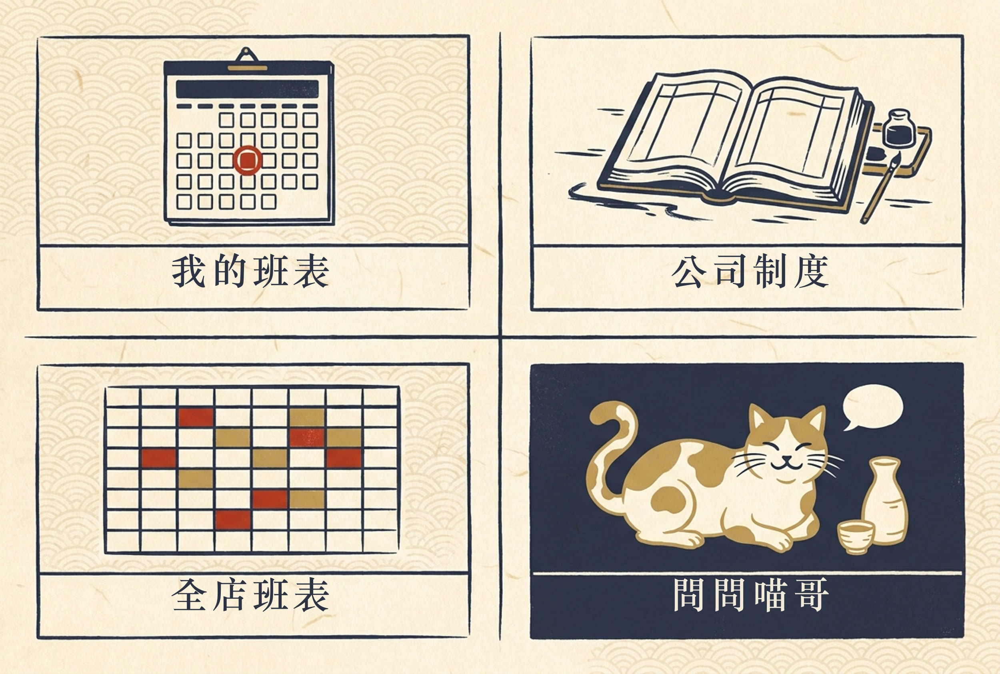
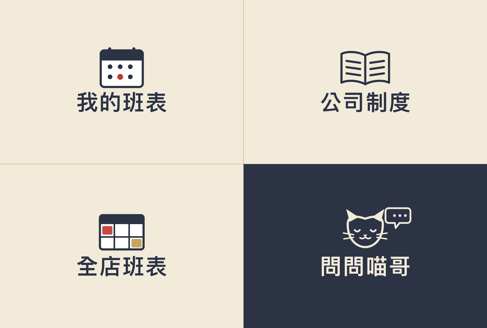

喵哥 — 把店裡的 GPTs 助理搬進 LINE
一個餐飲業主的第一支 AI 機器人。記的不是「怎麼寫 code」（那是 AI 做的），而是過程中搞懂的架構與知識點——給同樣想用 AI 做點東西、但不是工程師的人參考。

為什麼要做這件事
店裡本來就有一個 ChatGPT 的 GPTs 助理「喵哥」，員工可以問它酒水、出餐、服務 SOP。但有個致命的摩擦：要用它，得先打開 ChatGPT、還要登入。現場忙起來根本不會有人這樣做。
而員工每天本來就掛在 LINE 上。所以問題其實很單純：能不能把喵哥搬到 LINE，讓大家在原本就在用的地方直接問？
一開始我只想著「搬過去」。但跟 AI 討論的過程中，範圍一路長大——因為 AI 幫我看到：這個排班系統本身已經有一大半基礎建設（LINE 官方帳號、員工綁定、公司制度知識庫）可以直接複用，搬進來反而比從零做一個 GPTs 替代品更省。於是它不只搬了家，還接上了店裡的真實資料。
系統架構
搞懂這條流程，就懂整個機器人怎麼運作了：員工在 LINE 傳訊息，觸發一條叫 webhook 的線通知我的系統；系統查身份、把「人設＋店內知識庫（整包）＋最近對話」組成一份問題包交給大語言模型；模型回答後，用免費的「回覆」通道傳回員工，並把這次對話存起來當下次的記憶。
知識庫本身有三個入口——公司制度文件、上傳的檔案、酒類資料庫——但它們都匯進同一條組裝管線，在「組問題包」那一步整包交給模型。
技術選型與外部金鑰
| 工具 / 技術 | 選它的理由 |
|---|---|
| LINE Messaging API | 員工本來就在用 LINE；官方帳號的「回覆」訊息免費，聊天機器人成本幾乎是零 |
| OpenRouter | 一把金鑰就能用所有家的模型，想換模型改一個字就好，不用分別去各家開帳號 |
| Claude Sonnet 5 | 起步的主力模型：中文語感和「人味」在這個用途最穩 |
| Supabase / Next.js（既有） | 排班系統原本就在用，酒庫、對話紀錄、後台頁面直接加上去 |
| nano banana（生圖） | 圖文選單的和紙風底圖——AI 生藝術、我再疊上精準中文（見踩坑四） |
我學到的關鍵知識點
這節是這篇筆記的重點——四個讓我「原來如此」的認知。
回覆訊息（reply）是使用者傳來、機器人回應——免費、無上限。喵哥每一次回答都走這條，所以再多人問、問幾百次，都是零成本。主動推播（push）是機器人主動送的（例如每天班表提醒）——計費，而且逐人算，對 20 個人各推一則就是 20 則。
免費版一個月 200 則額度算的是 push。真正吃額度的不是聊天，是「每天主動提醒」：N 個人 × 30 天，大概 6~7 人就爆 200。
我以為 AI 機器人一定是「去資料庫搜出相關段落再回答」的架構（RAG）。但這個規模不需要——我們是每次對話把店裡全部知識整包塞給 AI，靠 prompt caching 讓重複的部分只算 1/10 的錢。好處是 AI 看得到全貌，跨酒款比較、「客人喜歡 A 推什麼」不會因搜尋漏抓而答錯，而且零檢索基礎建設。
我原以為要用哪家 AI 就得去那家開帳號、綁卡、學它的接法。OpenRouter 是一個中間層：一把金鑰、背後接所有家。想從 Claude 換成 GPT 或 Gemini 比較效果，只要改一個模型名稱。這讓「A/B 試哪個模型寫得好」幾乎沒有門檻——我甚至把「聊天模型」和「寫文案模型」分開設定。
酒類資料庫最聰明的一步：拍張酒標照 → AI 辨識＋上網查＋照店裡範本填好草稿 → 我過目、補店內價格與出杯規格 → 才上架。關鍵決策是把「上網查」放在建檔那一刻，而不是員工提問的當下：小眾清酒網路資料零散、常是日文，AI 容易腦補，錯的話員工會直接講給客人聽；建檔時我會過目，錯的當場攔下，而且全店講法一致。
AI 怎麼幫我做的
我負責所有「判斷」，AI 負責所有「執行」。我一行 code 都沒寫。
- 架構設計、成本估算
- 全部程式、抓 bug
- 生圖、寫文件
- 要不要做、範圍多大
- 用哪個模型、叫什麼名字
- 風格對不對、上線後哪裡怪
範例驅動：把店裡原本的 GPTs 提示詞直接貼給 AI 當「規格書」，說「照這個做但搬到 LINE」。症狀描述＋截圖：喵哥排版變糟時，我貼「改之前 vs 改之後」兩張對話截圖，比文字形容準得多。探索式提問：問「這是 RAG 嗎？」「什麼算一則訊息？」——這些「要它教我」的問題，反而是我學最多的地方。
其中一個關鍵轉折是對品牌的堅持：第一版圖文選單我嫌「太像一般 App、跟店的調性不合」，要求改用萬華世界的和紙木刻風。AI 就改用生圖模型產底圖、再疊上精準中文。堅持品味，AI 有能力接住。

踩到的坑，讓我更懂的事
這些都是 AI 幫我診斷和修的，但每一個都讓我多懂一點。
根本原因：寫入資料庫時「靜默失敗」了——程式沒報錯、但每次都沒寫進去，連帶喵哥的「多輪記憶」從上線起就沒作用（每句話都當新對話在答）。
根本原因：新一代 AI 有「深度思考」模式，回答前會在內部先想一長串——而這些思考也算進回覆的字數額度。某些線路預設把思考打開，結果額度被思考燒光、正文一個字都吐不出來。
根本原因：我加的一句「短問題幾行講完」被模型過度執行了。
根本原因：圖像模型擅長「畫」、不擅長「精準的字」。
如果繼續往下
- 從主管群開放到全員：目前先開給主管測試。全員之前要先算 LINE 額度——聊天免費，但全店每天推播提醒得評估付費方案。
- 事件通知：表單截止、班表發布、臨時徵班——這些主動通知可複用同一套 LINE 基礎建設。
- 知識變多時的分層裁剪：酒款累積到上百支時，把售完的酒收成一行摘要，替 AI 的「問題包」瘦身。
- 接上銷售數據：未來把 POS 銷售資料接進來，喵哥就能回答「這支好不好賣」，選酒筆記也能長出真實回購紀錄。
這個案例展示了什麼：一種「決策我來、執行 AI 來」的協作節奏，加上三個很好複製的習慣——(1) 把現有的東西（店裡的 GPTs 提示詞）直接當規格書餵給 AI，省掉大量來回；(2) 先上線、再用真實使用回饋迭代，而不是追求一次做到完美；(3) 用截圖描述症狀，比用文字形容問題精準得多。
可移植性：很適合「手上有明確參考範本、而且願意分批迭代」的專案。特殊條件是——我這個案子能長這麼快，是因為排班系統的地基本來就在；全新從零開始的話，前期會多花時間搭地基。